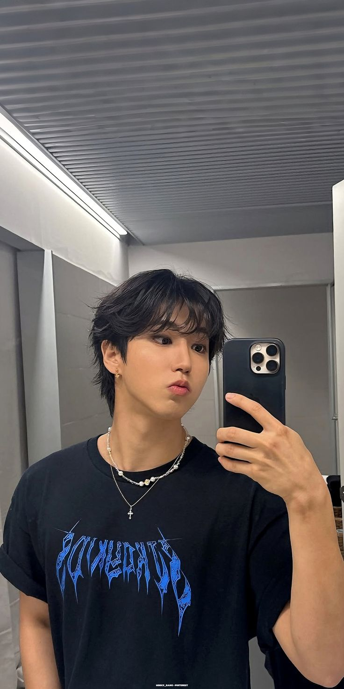
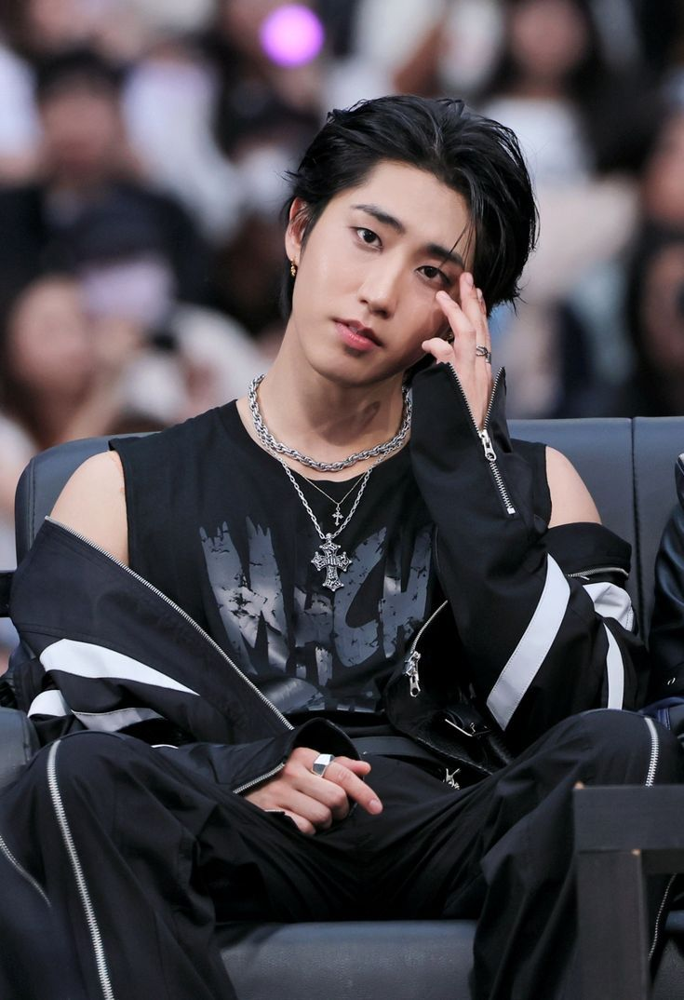
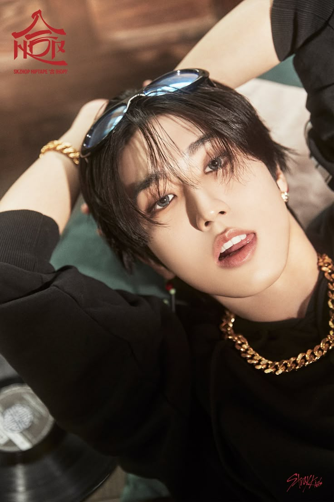
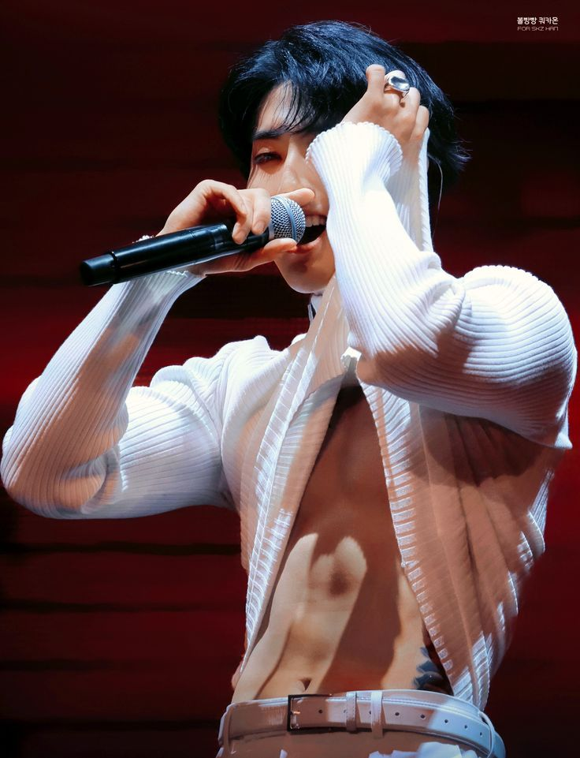

Han Ji Sung
Perfil
Nombre: 한지성 / Han Ji Sung
Nombre japonés: ハン
Nombre inglés: Peter
También conocido como: J.One
Apodos: Hannie, Hanji, Quokka
Profesión: Cantante, Rapero, Compositor y Bailarín
Fecha de nacimiento: 14-Septiembre-2000 (25 Años)
Lugar de nacimiento: Incheon, Corea del Sur
Estatura: 170 cm
Peso: 49 kg
Tipo de sangre: B
Signo zodiacal: Virgo
Signo zodiacal chino: Dragón
Familia: Padres y hermano mayor.
Agencia: JYP Entertainment
Temas para Dramas
Updraft tema para Typhoon Family (2025)
Programas de TV
King of Mask Singer. (MBC, 2019) Ep. 197
Stray Kids (Mnet, 2017)
Programa de Radio
(SBS) Power FM Young Street radio (15.04.2019) (Junto a Hyun Jin, Felix y Seung Min)
(SBS Radio) NCT Night Night (15.11.2018) (Junto a Seung Min , I.N , Felix y Hyun Jin)
Curiosidades
Estudios:R.E.A.L International School (Malasia)
Periodo de entrenamiento: 3 años (Ingresó en las audiciones de diciembre del 2015)
Modelo a seguir: Zico de Block-B
Instrumentos: Guitarra y piano.
Idiomas: Coreano (Materno), Inglés (Básico), Malayo (Básico).
Comidas favoritas:Postres, como el cheesecake y el pastel de chocolate.
Color favorito:Rojo.
Vivió gran parte de su infancia y adolescencia en Malasia, precisamente durante 6 años,
donde estudió en un colegio bilingüe.
Han viajó a Corea desde Malasia para tomar un examen. Pensó que si volvía a Malasia, nunca
tendría la oportunidad de convertirse en cantante, por lo que llegó a un acuerdo con sus padres
de que si no entraba en una agencia en un año, regresaría a Malasia y solo estudiaría.
Quería convertirse en cantante porque pensaba que contar su historia a través de la música era genial.
Perteneció a la academia de baile y rap "DEF Academy".
Si no fuera idol, sería productor.
Tiene 107 canciones con derechos de autor a su nombre en Según Korea Music Copyright Association.
Sufre de tripofobia (miedo a los agujeros)
El 01 de Febrero de 2021, internautas sacaron a la luz un track previo a su debut que contenía
insultos y frases racistas contra los asiáticos del sudeste. Se señaló que su rap también incluía
un término contra las personas discapacitadas. El clip de rap fue originalmente subido por Han en su
canal personal de YouTube cuando tenía entre 13 y 14 años pero fue eliminado luego de debutar.
Tiene 100 canciones con derechos de autor a su nombre según Korea Music Copyright Association,
conviertiendole así en el tercer idol de la 4th gen del K-pop y el más joven en ser acreditado con
más de 100 canciones por KOMCA
imágenes




